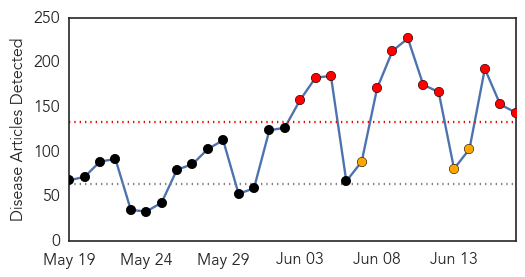
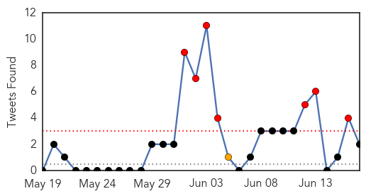
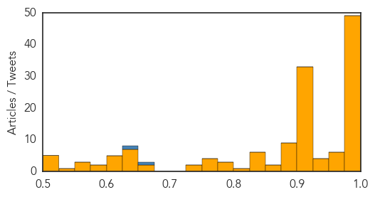
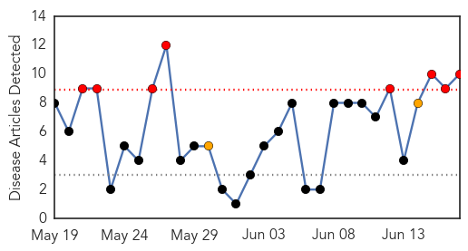

Unknown
30-Day Web Trend
11 alerts, 3 warnings

30-Day Twitter Trend
7 alerts, 10 warnings

Article Locations

Article Confidences
Top Articles:
- 0.999
- South Korea quarantines 2,300-plus people, closes 1,800 schools as deadly MERS epidemic spreads
- 0.999
- Nation aims to stem MERS by end-June
- 0.999
- Mers virus claims first victim in Europe as death toll rises in South Korea
- 0.999
- MERS a 'wake-up call' says WHO as S. Korea reports 20th death
- 0.999
- MERS a 'wake-up call' says WHO as S. Korea reports 20th death
- 0.999
- WHO says MERS a 'wake-up call' as S. Korea reports 20th death
- 0.999
- WHO:Â South Korean MERSÂ outbreak is "wakeup call" for other countries
- 0.998
- South Korean MERS Outbreak a ‘Wake-up Call’
- 0.998
- Israel girds for possible MERS virus outbreak
- 0.998
- WHO says MERS a 'wake-up call' as South Korea reports 20th death
- 0.998
- The World On Arirang
- 0.997
- South Korea reports 20th MERS death - Regional
- 0.997
- South Korea MERS Outbreak 2015 Death Toll Update
- 0.997
- Over 6,500 quarantined for possible MERS
- 0.997
- Hospitals to open examination rooms for MERS suspects
- 0.996
- (MERS virus) Czech patient tested negative
- 0.996
- MERS Virus Continues to Take Victims in South Korea as Cases Surface in Europe
- 0.996
- South Korea reports 20th MERS death
- 0.996
- The World On Arirang
- 0.995
- MERS under control in South Korea
- 0.995
- Doubts grow over containment plans
- 0.995
- DOH asks private hospitals to sustain measures to keep country free of deadly virus
- 0.995
- Europe on alarm after first MERS death in Germany
- 0.995
- Concerns surround 2-week MERS latency period-INSIDE Korea JoongAng Daily
- 0.994
- South Korea reports 20th MERS death
- 0.993
- Tests rule out MERS in Czech patient
- 0.993
- South Korea reports 20th MERS death
- 0.993
- South Korea reports 20th MERS death
- 0.992
- Over 10,000 quarantined already in S. Korean MERS outbreak – The Korea Times
- 0.992
- WHO says MERS a ‘wake-up call’ as SK reports 20th death
- 0.992
- Germany Reports First Death from MERS
- 0.991
- South Korea reports 20th MERS death
- 0.991
- South Korean Hospital Scrutinized in MERS Outbreak
- 0.991
- South Korea Reports 20th MERS Death
- 0.991
- (LEAD) Park urges transparent release of MERS information
- 0.990
- No need for travel bans due to MERS: World Health Org.
- 0.987
- WHO plays down MERS outbreak in South Korea
- 0.987
- Suvarnabhumi gears up for MERS
- 0.987
- Update on latest MERS situation overseas
- 0.986
- South Korea reports 20th MERS death
- 0.985
- South Korea reports three more MERS deaths
- 0.984
- Medical Staff in Korea Fight against Discrimination While Treating MERS Patients
- 0.983
- 8 new MERS cases, total patients 162
- 0.983
- Park meets MERS task force officials
- 0.982
- Over 6,500 in isolation for MERS
- 0.982
- South Korean schools reopen despite widespread MERS fear
- 0.979
- Park meets MERS task force officials
- 0.977
- 12 MERS cases reported
- 0.977
- Deadly superbug CRE, kills two in Melbourne, spreads across Victoria, infecting 60
- 0.966
- Germany reports first death from MERS virus
Showing top 50 articles...
Top Tweets:
- 0.724
- .@WHO's Emergency Committee on MERS says for the 9th time the disease is not a global public health emergency. http://t.co/uOHCkFgYqd
- 0.652
- The Intl Health Regulations Emergency Committee on MERS: conditions for a Public Health Emergency of Intl Concern have not been met
- 0.614
- RT: 8 new MERS cases bring total to 162 cases in S Korea outbreak. 5 of 8 new cases again from Samsung Seoul Hospital http://t.co/…
- 0.586
- RT: 6,508 people have been quarantined so far due to MERS in S.Korea. A rapid increase from yesterday(922 more)
- 0.521
- RT: MERS virus is not a global emergency, says WHO http://t.co/SE47RCbRc2
Dengue Fever
30-Day Web Trend
8 alerts, 2 warnings

30-Day Twitter Trend
1 alerts, 0 warnings

Article Locations

Article Confidences

Top Articles:
- 0.989
- Two more dengue deaths confirmed
- 0.987
- EDCD to launch campaign against dengue
- 0.978
- Sterile mosquitoes released in China to fight dengue
- 0.972
- Dengue: Khader to take stock of situation today
- 0.907
- Suspected dengue takes lives of Beltangady man, Bhatkal woman
- 0.898
- 28-year-old third to die of dengue fever in city
- 0.853
- Public needs to stay on the alert
- 0.835
- New dengue vaccine to be available in 2017
- 0.647
- Man-made solution for dengue
- 0.588
- FTs, Selangor step up anti-dengue fight - Community
Top Tweets:
-
No tweets found for Jun 17, 2015